将模仿学习与结构化预测归约到无遗憾在线学习
A Reduction of Imitation Learning and Structured Prediction to No-Regret Online Learning
第 1 页Page 1PDF p.1
A Reduction of Imitation Learning and Structured Prediction to No-Regret Online Learning
核对原版排版
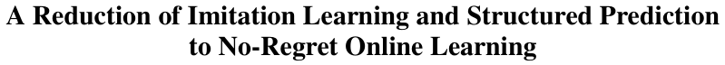
将模仿学习与结构化预测归约至无遗憾在线学习
Stéphane Ross Robotics Institute Carnegie Mellon University Pittsburgh, PA 15213, USA stephaneross@cmu.edu
核对原版排版
Stéphane Ross Robotics Institute Carnegie Mellon University Pittsburgh, PA 15213, USA stephaneross@cmu.edu
Geoffrey J. Gordon
核对原版排版
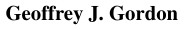
Geoffrey J. Gordon
J. Andrew Bagnell Robotics Institute Carnegie Mellon University Pittsburgh, PA 15213, USA dbagnell@ri.cmu.edu
核对原版排版
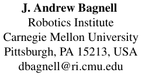
J. Andrew Bagnell Robotics Institute Carnegie Mellon University Pittsburgh, PA 15213, USA dbagnell@ri.cmu.edu
Machine Learning Department Carnegie Mellon University Pittsburgh, PA 15213, USA ggordon@cs.cmu.edu
核对原版排版
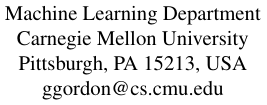
Machine Learning Department Carnegie Mellon University Pittsburgh, PA 15213, USA ggordon@cs.cmu.edu
Abstract
核对原版排版
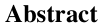
摘要
Sequential prediction problems such as imitation learning, where future observations depend on previous predictions (actions), violate the common i.i.d. assumptions made in statistical learning. This leads to poor performance in theory and often in practice. Some recent approaches (Daumé III et al., 2009; Ross and Bagnell, 2010) provide stronger guarantees in this setting, but remain somewhat unsatisfactory as they train either non-stationary or stochastic policies and require a large number of iterations. In this paper, we propose a new iterative algorithm, which trains a stationary deterministic policy, that can be seen as a no regret algorithm in an online learning setting. We show that any such no regret algorithm, combined with additional reduction assumptions, must find a policy with good performance under the distribution of observations it induces in such sequential settings. We demonstrate that this new approach outperforms previous approaches on two challenging imitation learning problems and a benchmark sequence labeling problem.
核对原版排版
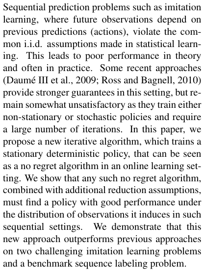
诸如模仿学习等序列预测问题中，未来的观测依赖于先前的预测（动作），这违背了统计学习中常见的独立同分布（i.i.d.）假设。这导致其在理论上以及往往在实践中表现不佳。近期的一些方法（Daumé III et al., 2009; Ross and Bagnell, 2010）在该设定下提供了更强的保证，但仍不尽如人意，因为它们训练的是非平稳或随机策略，并且需要大量的迭代次数。在本文中，我们提出了一种训练平稳确定性策略的新迭代算法，该算法可被视为在线学习设定下的无遗憾算法。我们证明，任何此类无遗憾算法在结合额外的归约假设后，都必然能在此类序列设定中、在其诱导的观测分布下找到具有良好性能的策略。我们证明了这一新方法在两个具有挑战性的模仿学习问题和一个基准序列标注问题上均优于以往的方法。
1 INTRODUCTION
核对原版排版
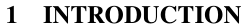
1 引言
Sequence Prediction problems arise commonly in practice. For instance, most robotic systems must be able to predict/make a sequence of actions given a sequence of observations revealed to them over time. In complex robotic systems where standard control methods fail, we must often resort to learning a controller that can make such predictions. Imitation learning techniques, where expert demon-
核对原版排版
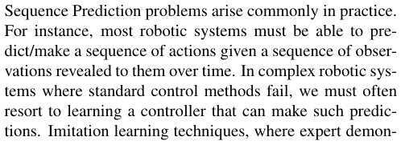
序列预测问题在实践中普遍存在。例如，大多数机器人系统必须能够根据随时间向其展现的一系列观测，预测/执行一系列动作。在标准控制方法失效的复杂机器人系统中，我们通常必须求助于学习一个能够做出此类预测的控制器。模仿学习技术中，良好行为的专家示
Appearing in Proceedings of the 14th International Conference on Artificial Intelligence and Statistics (AISTATS) 2011, Fort Lauderdale, FL, USA. Volume 15 of JMLR: W&CP 15. Copyright 2011 by the authors.
核对原版排版
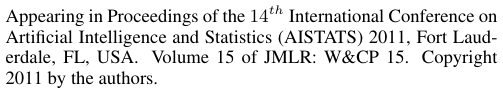
发表于 Proceedings of the 14th International Conference on Artificial Intelligence and Statistics (AISTATS) 2011, Fort Lauderdale, FL, USA. JMLR: W&CP 第 15 卷。版权所有 2011 归作者所有。
strations of good behavior are used to learn a controller, have proven very useful in practice and have led to stateof-the art performance in a variety of applications (Schaal, 1999; Abbeel and Ng, 2004; Ratliff et al., 2006; Silver et al., 2008; Argall et al., 2009; Chernova and Veloso, 2009; Ross and Bagnell, 2010). A typical approach to imitation learning is to train a classifier or regressor to predict an expert’s behavior given training data of the encountered observations (input) and actions (output) performed by the expert. However since the learner’s prediction affects future input observations/states during execution of the learned policy, this violate the crucial i.i.d. assumption made by most statistical learning approaches.
核对原版排版
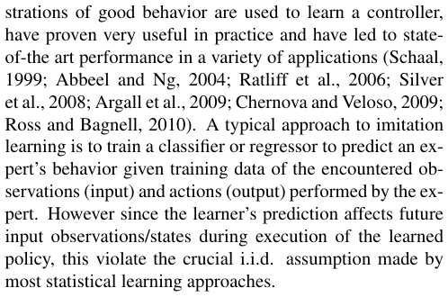
教被用于学习控制器，这在实践中已被证明非常有用，并在各种应用中取得了最先进的性能（Schaal, 1999; Abbeel and Ng, 2004; Ratliff et al., 2006; Silver et al., 2008; Argall et al., 2009; Chernova and Veloso, 2009; Ross and Bagnell, 2010）。模仿学习的一种典型方法是在给定专家所经历的观测（输入）和专家执行的动作（输出）的训练数据下，训练一个分类器或回归器来预测专家的行为。然而，由于学习者的预测在执行所学策略期间会影响未来的输入观测/状态，这违背了大多数统计学习方法所依赖的关键 i.i.d. 假设。
Ignoring this issue leads to poor performance both in theory and practice (Ross and Bagnell, 2010). In particular, a classifier that makes a mistake with probability ϵ under the distribution of states/observations encountered by the expert can make as many as T2 ϵ mistakes in expectation over T -steps under the distribution of states the classifier itself induces (Ross and Bagnell, 2010). Intuitively this is because as soon as the learner makes a mistake, it may encounter completely different observations than those under expert demonstration, leading to a compounding of errors.
核对原版排版
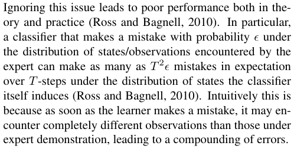
忽视这一问题会在理论和实践中均导致较差的性能（Ross and Bagnell, 2010）。具体而言，在专家遇到的状态/观测分布下以概率 ϵ 犯错的分类器，在分类器自身所诱导的状态分布下，在 T-steps 内期望犯错次数可能多达 T2 ϵ 次（Ross and Bagnell, 2010）。直观地说，这是因为学习者一旦犯错，就可能遇到与专家示教下完全不同的观测，从而导致复合误差。
Recent approaches (Ross and Bagnell, 2010) can guarantee an expected number of mistakes linear (or nearly so) in the task horizon T and error ϵ by training over several iterations and allowing the learner to influence the input states where expert demonstration is provided (through execution of its own controls in the system). One approach (Ross and Bagnell, 2010) learns a non-stationary policy by training a different policy for each time step in sequence, starting from the first step. Unfortunately this is impractical when T is large or ill-defined. Another approach called SMILe (Ross and Bagnell, 2010), similar to SEARN (Daumé III et al., 2009) and CPI (Kakade and Langford, 2002), trains a stationary stochastic policy (a finite mixture of policies) by adding a new policy to the mixture at each iteration of training. However this may be unsatisfactory for practical applications as some policies in the mixture are worse than
核对原版排版
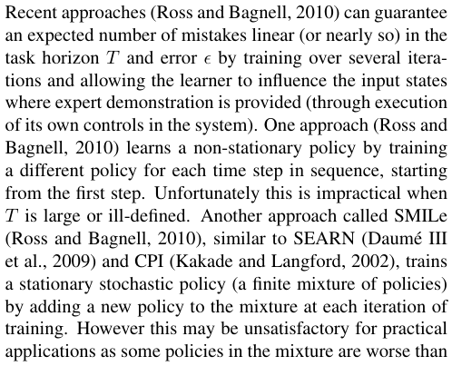
近期的方法（Ross and Bagnell, 2010）通过在多个迭代中进行训练，并允许学习者影响提供专家示教的输入状态（通过在系统中执行其自身控制），能够保证期望错误数关于任务时界 T 和误差 ϵ 呈线性（或接近线性）增长。其中一种方法（Ross and Bagnell, 2010）通过从第一步开始按顺序为每个时间步训练一个不同的策略，来学习一个非平稳策略。不幸的是，当 T 很大或未明确定义时，这是不切实际的。另一种名为 SMILe 的方法（Ross and Bagnell, 2010）类似于 SEARN（Daumé III et al., 2009）和 CPI（Kakade and Langford, 2002），通过在每次训练迭代中向混合策略中添加一个新策略，来训练平稳随机策略（策略的有限混合）。然而，这在实际应用中可能令人不甚满意，因为混合中的某些策略劣于
展开第 1 页原版整页（含全部图表、公式与页眉页脚）
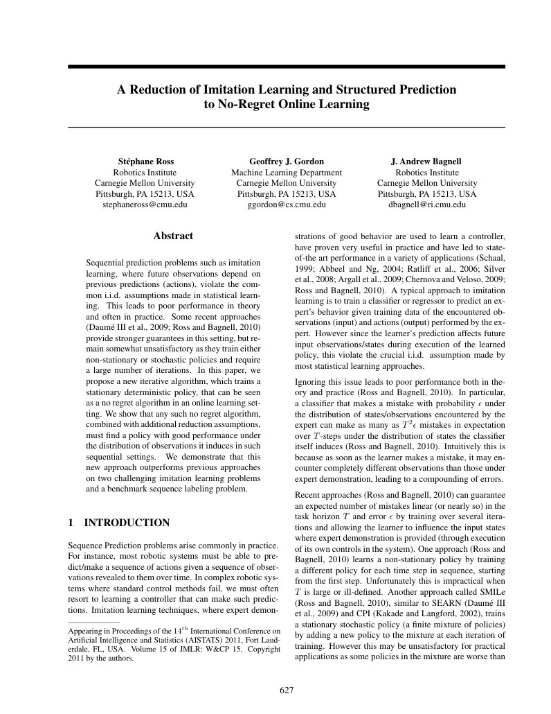
第 2 页Page 2PDF p.2
others and the learned controller may be unstable.
核对原版排版
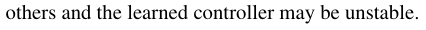
其他策略，且学到的控制器可能不稳定。
We propose a new meta-algorithm for imitation learning which learns a stationary deterministic policy guaranteed to perform well under its induced distribution of states (number of mistakes/costs that grows linearly in T and classification cost ϵ ). We take a reduction-based approach (Beygelzimer et al., 2005) that enables reusing existing supervised learning algorithms. Our approach is simple to implement, has no free parameters except the supervised learning algorithm sub-routine, and requires a number of iterations that scales nearly linearly with the effective horizon of the problem. It naturally handles continuous as well as discrete predictions. Our approach is closely related to no regret online learning algorithms (Cesa-Bianchi et al., 2004; Hazan et al., 2006; Kakade and Shalev-Shwartz, 2008) (in particular Follow-The-Leader ) but better leverages the expert in our setting. Additionally, we show that any no-regret learner can be used in a particular fashion to learn a policy that achieves similar guarantees.
核对原版排版
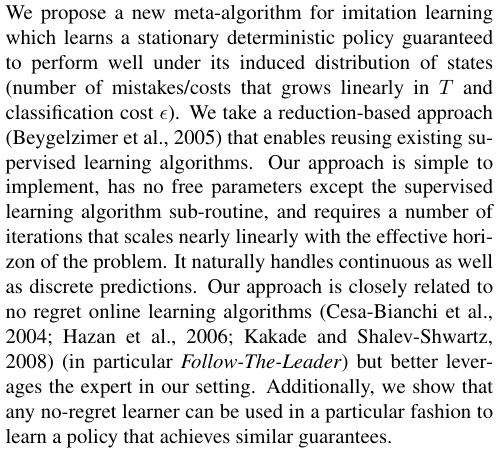
我们提出了一种新的模仿学习元算法，该算法学习一个平稳确定性策略，保证在其诱导的状态分布下表现良好（错误数/代价关于 T 和分类代价 ϵ 呈线性增长）。我们采用基于归约的方法（Beygelzimer et al., 2005），能够复用现有的监督学习算法。我们的方法易于实现，除监督学习算法子程序外没有自由参数，并且所需的迭代次数与问题的有效时界呈近线性缩放。它能够自然地处理连续预测和离散预测。我们的方法与无遗憾在线学习算法（Cesa-Bianchi et al., 2004; Hazan et al., 2006; Kakade and Shalev-Shwartz, 2008）（特别是 Follow-The-Leader）密切相关，但在我们的设定下能更好地利用专家。此外，我们证明了任何无遗憾学习器都可以通过特定方式用于学习能够达到类似保证的策略。
We begin by establishing our notation and setting, discuss related work, and then present the DAGGER (Dataset Aggregation) method. We analyze this approach using a noregret and a reduction approach (Beygelzimer et al., 2005). Beyond the reduction analysis, we consider the sample complexity of our approach using online-to-batch (CesaBianchi et al., 2004) techniques. We demonstrate DAGGER is scalable and outperforms previous approaches in practice on two challenging imitation learning problems: 1) learning to steer a car in a 3D racing game ( Super Tux Kart ) and 2) and learning to play Super Mario Bros. , given input image features and corresponding actions by a human expert and near-optimal planner respectively. Following Daumé III et al. (2009) in treating structured prediction as a degenerate imitation learning problem, we apply DAGGER to the OCR (Taskar et al., 2003) benchmark prediction problem achieving results competitive with the state-of-the-art (Taskar et al., 2003; Ratliff et al., 2007; Daumé III et al., 2009) using only single-pass, greedy prediction.
核对原版排版
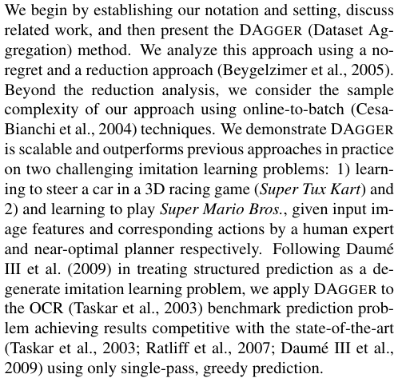
我们首先确立符号和设定，讨论相关工作，随后提出 DAGGER（Dataset Aggregation）方法。我们利用无遗憾和归约方法（Beygelzimer et al., 2005）对该方法进行了分析。除归约分析外，我们还利用在线到批量（CesaBianchi et al., 2004）技术考察了我们方法的样本复杂度。我们证明了 DAGGER 具有可扩展性，并在两个具有挑战性的模仿学习问题上在实践中优于以往方法：1）在 3D 赛车游戏（Super Tux Kart）中学习赛车转向；2）分别基于人类专家和近最优规划器给出的输入图像特征及对应动作，学习玩 Super Mario Bros.。借鉴 Daumé III et al. (2009) 将结构化预测视为退化模仿学习问题的做法，我们将 DAGGER 应用于 OCR（Taskar et al., 2003）基准预测问题，仅使用单遍贪心预测就取得了与最前沿方法（Taskar et al., 2003; Ratliff et al., 2007; Daumé III et al., 2009）相媲美的结果。
2 PRELIMINARIES
核对原版排版
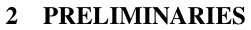
2 预备知识
We begin by introducing notation relevant to our setting. We denote by Π the class of policies the learner is considering and T the task horizon. For any policy π , we let dt π denote the distribution of states at time t if the learner executed policy π from time step 1 to t − 1. Furthermore, we denote dπ = T1 � Tt =1d πtthe average distribution of states if we follow policy π for T steps. Given a state s , we denote C ( s, a ) the expected immediate cost of performing action a in state s for the task we are considering and denote Cπ ( s ) = E a∼π ( s )[ C ( s, a )] the expected immediate cost of π in s . We assume C is bounded in [0 , 1]. The total cost of executing policy π for T -steps ( i.e. , the cost-to-go) is denoted J ( π ) =�T t =1Es∼dt π[Cπ(s)] =TEs∼d π[Cπ(s)].
核对原版排版
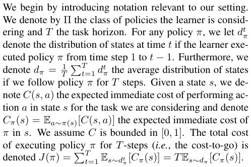
我们首先介绍与我们设定相关的符号。我们用 Π 表示学习者所考虑的策略类，用 T 表示任务时界。对于任意策略 π，我们用 dt π 表示如果学习者从时间步 1 到 t − 1 执行策略 π 时在时间 t 的状态分布。此外，我们用〔行内公式见原版〕表示如果遵循策略 π 执行 T 步时的平均状态分布。给定状态 s，我们用 C ( s, a ) 表示在我们所考虑的任务中在状态 s 下执行动作 a 的期望即时代价，并用 Cπ ( s ) = E a∼π ( s )[ C ( s, a )] 表示 π 在 s 下的期望即时代价。我们假设 C 有界于 [0 , 1]。执行策略 π 经历 T-steps 的总代价（即 cost-to-go）记为〔行内公式见原版〕。
In imitation learning, we may not necessarily know or observe true costs C ( s, a ) for the particular task. Instead, we observe expert demonstrations and seek to bound J ( π ) for any cost function C based on how well π mimics the expert’s policy π∗ . Denote ℓ the observed surrogate loss function we minimize instead of C . For instance ℓ ( s, π ) may be the expected 0-1 loss of π with respect to π∗ in state s , or a squared/hinge loss of π with respect to π∗ in s . Importantly, in many instances, C and ℓ may be the same function– for instance, if we are interested in optimizing the learner’s ability to predict the actions chosen by an expert.
核对原版排版
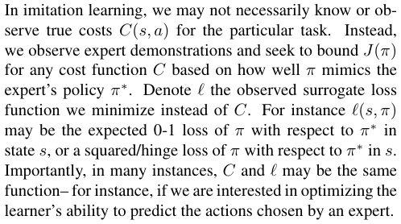
在模仿学习中，对于特定任务，我们不一定知晓或能够观测到真实代价 C ( s, a )。相反，我们观测专家示教，并力求基于 π 模仿专家策略 π∗ 的优劣程度，对任意代价函数 C 的 J ( π ) 给出界。记 ℓ 为我们用以替代 C 进行最小化的观测代理损失函数。例如，ℓ ( s, π ) 可以是状态 s 下 π 相对于 π∗ 的期望 0-1 损失，或者是状态 s 下 π 相对于 π∗ 的平方/合页损失。重要的是，在许多情况下，C 与 ℓ 可以是同一个函数——例如，如果我们关注的是优化学习者预测专家所选动作的能力。
Our goal is to find a policy ˆ π which minimizes the observed surrogate loss under its induced distribution of states, i.e.:
核对原版排版
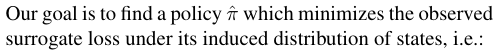
我们的目标是找到一个策略 ˆ π，以最小化在其诱导的状态分布下的观测代理损失，即：
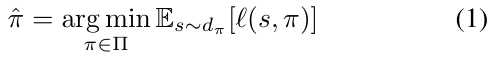
As system dynamics are assumed both unknown and complex, we cannot compute dπ and can only sample it by executing π in the system. Hence this is a non-i.i.d. supervised learning problem due to the dependence of the input distribution on the policy π itself. The interaction between policy and the resulting distribution makes optimization difficult as it results in a non-convex objective even if the loss ℓ ( s, · ) is convex in π for all states s . We now briefly review previous approaches and their guarantees.
核对原版排版
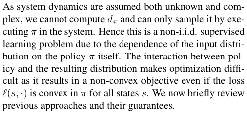
由于系统动力学被假定为既未知又复杂，我们无法直接计算 dπ，只能通过在系统中执行 π 对其进行采样。因此，由于输入分布对策略 π 自身存在依赖性，这是一个非 i.i.d. 的监督学习问题。策略与所产生分布之间的相互作用使得优化变得困难，因为即使损失 ℓ ( s, · ) 对所有状态 s 关于 π 都是凸的，它也会导致非凸的目标函数。下面我们简要回顾以往的方法及其理论保证。
2.1 Supervised Approach to Imitation
核对原版排版
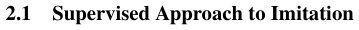
2.1 模仿学习的监督方法
The traditional approach to imitation learning ignores the change in distribution and simply trains a policy π that performs well under the distribution of states encountered by the expert dπ∗ . This can be achieved using any standard supervised learning algorithm. It finds the policy π ˆ sup :
核对原版排版
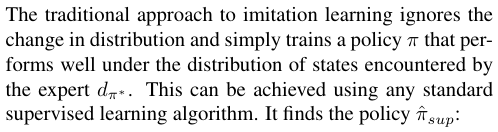
传统的模仿学习方法忽略分布的变化，仅仅训练一个在专家遇到的状态分布 dπ∗ 下表现良好的策略 π。这可以通过任何标准的监督学习算法来实现。它寻找到的策略为 π ˆ sup ：
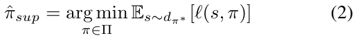
Assuming ℓ ( s, π ) is the 0-1 loss (or upper bound on the 0- 1 loss) implies the following performance guarantee with respect to any task cost function C bounded in [0 , 1]: Theorem 2.1. (Ross and Bagnell, 2010) Let E s∼dπ∗ [ ℓ ( s, π )] = ϵ, then J ( π ) ≤ J ( π∗ ) + T2 ϵ.
核对原版排版
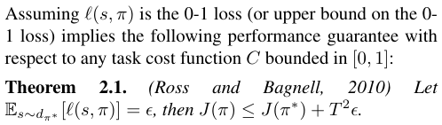
假设 ℓ ( s, π ) 为 0-1 损失（或 0-1 损失的上界），则对于任意有界于 [0 , 1] 的任务代价函数 C，具有以下性能保证：定理 2.1.（Ross and Bagnell, 2010）令 E s∼dπ∗ [ ℓ ( s, π )] = ϵ，则 J ( π ) ≤ J ( π∗ ) + T2 ϵ。
Proof. Follows from result in Ross and Bagnell (2010) since ϵ is an upper bound on the 0-1 loss of π in dπ∗ .
核对原版排版
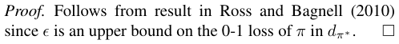
证明。根据 Ross and Bagnell (2010) 中的结果直接得出，因为 ϵ 是 π 在 dπ∗ 下 0-1 损失的上界。
Note that this bound is tight, i.e. there exist problems such that a policy π with ϵ 0-1 loss on dπ∗ can incur extra cost that grows quadratically in T . Kääriäinen (2006) demonstrated this in a sequence prediction setting1 and
核对原版排版
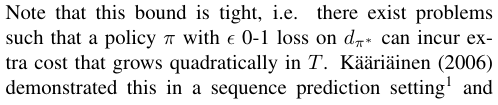
注意，该界是紧的，即存在某些问题，使得在 dπ∗ 上具有 ϵ 0-1 损失的策略 π 所产生的额外代价关于 T 呈二次方增长。Kääriäinen (2006) 在序列预测设定中证明了这一点1，并且
1In their example, an error rate of ϵ > 0 when trained to predict the next output in sequence with the previous correct output as input can lead to an expected number of mistakes of T 2−1−(1− 42 ϵϵ)T+1 + 21oversequencesoflengthTattesttime. This is bounded by T2 ϵ and behaves as Θ( T2 ϵ ) for small ϵ .
核对原版排版
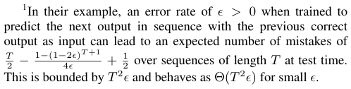
1在他们的例子中，在训练用于以先前的正确输出作为输入来预测序列中下一个输出时，错误率 ϵ > 0 会导致在测试时长度为 T 的序列上的期望错误数为〔行内公式见原版〕。该项以 T2 ϵ 为界，且对于较小的 ϵ，其渐近行为为 Θ( T2 ϵ )。
展开第 2 页原版整页（含全部图表、公式与页眉页脚）
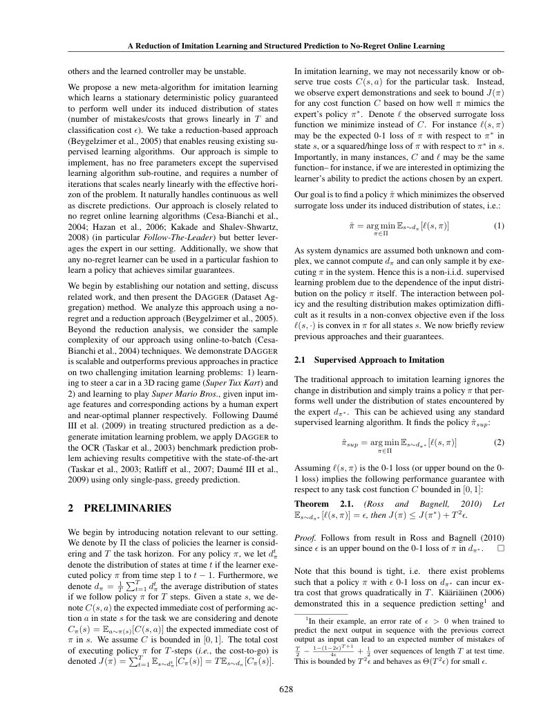
第 3 页Page 3PDF p.3
Ross and Bagnell (2010) provided an imitation learning example where J (ˆ πsup ) = (1 − ϵT ) J ( π∗ ) + T2 ϵ . Hence the traditional supervised learning approach has poor performance guarantees due to the quadratic growth in T . Instead we would prefer approaches that can guarantee growth linear or near-linear in T and ϵ . The following two approaches from Ross and Bagnell (2010) achieve this on some classes of imitation learning problems, including all those where surrogate loss ℓ upper bounds C .
核对原版排版
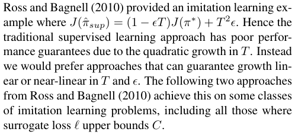
Ross and Bagnell (2010) 提供了一个模仿学习的例子，其中 J (ˆ πsup ) = (1 − ϵT ) J ( π∗ ) + T2 ϵ。因此，由于关于 T 呈二次方增长，传统的监督学习方法具有较差的性能保证。相反，我们更倾向于能够保证关于 T 和 ϵ 呈线性或近线性增长的方法。Ross and Bagnell (2010) 提出的以下两种方法在某些类别的模仿学习问题上实现了这一点，包括代理损失 ℓ 作为 C 上界的所有问题。
2.2 Forward Training
核对原版排版
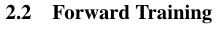
2.2 前向训练
The forward training algorithm introduced by Ross and Bagnell (2010) trains a non-stationary policy (one policy πt for each time step t ) iteratively over T iterations, where at iteration t , πt is trained to mimic π∗ on the distribution of states at time t induced by the previously trained policies π 1 , π 2 , . . . , πt− 1. By doing so, πt is trained on the actual distribution of states it will encounter during execution of the learned policy. Hence the forward algorithm guarantees that the expected loss under the distribution of states induced by the learned policy matches the average loss during training, and hence improves performance.
核对原版排版
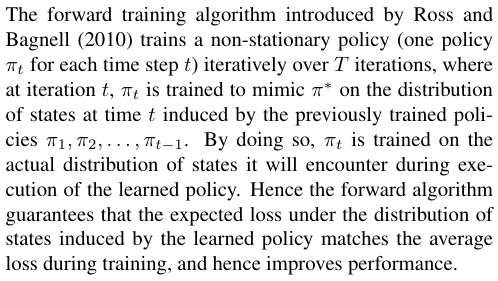
Ross and Bagnell (2010) 提出的前向训练算法在 T 次迭代中迭代训练一个非平稳策略（每个时间步 t 对应一个策略 πt）。在迭代 t 中，πt 被训练为在先前训练的策略 π 1 , π 2 , . . . , πt− 1 所诱导的时间 t 的状态分布上模仿 π∗。通过这种方式，πt 是在其执行所学策略期间实际会遇到的状态分布上进行训练的。因此，前向算法保证了在所学策略诱导的状态分布下的期望损失与训练期间的平均损失相匹配，从而提升了性能。
We here provide a theorem slightly more general than the one provided by Ross and Bagnell (2010) that applies to any policy π that can guarantee ϵ surrogate loss under its own distribution of states. This will be useful to bound the performance of our new approach presented in Section 3.
核对原版排版
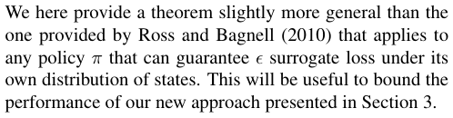
我们在此给出一个比 Ross and Bagnell (2010) 所给出的定理略微更一般的定理，该定理适用于任何能够保证在其自身状态分布下达到 ϵ 代理损失的策略 π。这将有助于界定我们在第 3 节中提出的新方法的性能。
Let Qπ t′(s, π) denote thet-step cost of executingπin initial state s and then following policy π′ and assume ℓ ( s, π ) is the 0-1 loss (or an upper bound on the 0-1 loss), then we have the following performance guarantee with respect to any task cost function C bounded in [0 , 1]:
核对原版排版
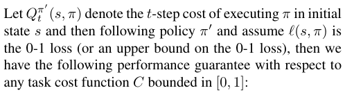
令 Qπ t′(s, π) 表示在初始状态 s 下执行 π 然后遵循策略 π′ 的 t 步代价，并假设 ℓ ( s, π ) 为 0-1 损失（或 0-1 损失的上界），则对于任意有界于 [0 , 1] 的任务代价函数 C，我们具有以下性能保证：
Theorem 2.2. Let π be such that E s∼dπ [ ℓ ( s, π )] = ϵ, and Qπ T −∗ t +1(s, a)−Qπ T −∗ t +1(s, π∗)≤u for all action a,t∈ { 1 , 2 , . . . , T }, dt π(s)>0, then J(π)≤J(π∗) +uTϵ.
核对原版排版
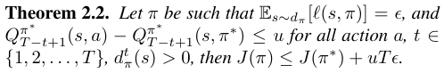
定理 2.2. 设 π 满足 E s∼dπ [ ℓ ( s, π )] = ϵ，且对于所有动作 a,t∈ { 1 , 2 , . . . , T }, dt π(s)>0，均有 Qπ T −∗ t +1(s, a)−Qπ T −∗ t +1(s, π∗)≤u，则 J(π)≤J(π∗) +uTϵ。
Proof. We here follow a similar proof to Ross and Bagnell (2010). Given our policy π , consider the policy π 1: t , which executes π in the first t -steps and then execute the expert π∗ . Then
核对原版排版
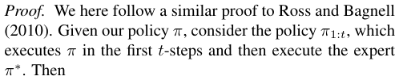
证明。我们在此采用与 Ross and Bagnell (2010) 类似的证明。给定我们的策略 π，考虑策略 π 1: t，它在前 t-steps 执行 π，随后执行专家策略 π∗。那么
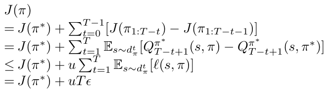
The inequality follows from the fact that ℓ ( s, π ) upper bounds the 0-1 loss, and hence the probability π and π∗ pick different actions in s ; when they pick different actions, the increase in cost-to-go ≤ u .
核对原版排版
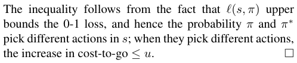
该不等式由以下事实得出：ℓ ( s, π ) 是 0-1 损失的上界，从而也是 π 与 π∗ 在 s 中选择不同动作的概率的上界；当它们选择不同动作时，cost-to-go 的增量 ≤ u。
In the worst case, u could be O ( T ) and the forward algorithm wouldn’t provide any improvement over the tra-
核对原版排版
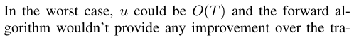
在最坏情况下，u 可能为 O ( T )，前向算法相比传统
ditional supervised learning approach. However, in many cases u is O (1) or sub-linear in T and the forward algorithm leads to improved performance. For instance if C is the 0-1 loss with respect to the expert, then u ≤ 1. Additionally if π∗ is able to recover from mistakes made by π , in the sense that within a few steps, π∗ is back in a distribution of states that is close to what π∗ would be in if π∗ had been executed initially instead of π , then u will be O (1).2 A drawback of the forward algorithm is that it is impractical when T is large (or undefined) as we must train T different policies sequentially and cannot stop the algorithm before we complete all T iterations. Hence it can not be applied to most real-world applications.
核对原版排版
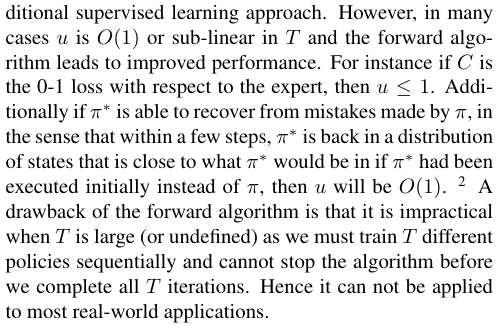
监督学习方法并不会带来任何提升。然而，在许多情况下 u 为 O (1) 或在 T 中呈次线性，前向算法能够提升性能。例如，若 C 是相对于专家的 0-1 损失，则 u ≤ 1。此外，如果 π∗ 能够从 π 所犯的错误中恢复——即在数步之内，π∗ 重新回到接近于最初执行 π∗ 而非 π 时 π∗ 本应处于的状态分布，则 u 将为 O (1)。2 前向算法的一个缺点是，当 T 很大（或未定义）时它并不实用，因为我们必须依次训练 T 个不同的策略，且在完成全部 T 次迭代之前无法停止算法。因此，它无法应用于大多数现实世界的应用。
2.3 Stochastic Mixing Iterative Learning
核对原版排版
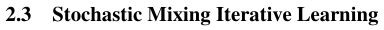
2.3 随机混合迭代学习
SMILe, proposed by Ross and Bagnell (2010), alleviates this problem and can be applied in practice when T is large or undefined by adopting an approach similar to SEARN (Daumé III et al., 2009) where a stochastic stationary policy is trained over several iterations. Initially SMILe starts with a policy π 0 which always queries and executes the expert’s action choice. At iteration n , a policy π ˆ n is trained to mimic the expert under the distribution of trajectories πn− 1 induces and then updates πn = πn− 1 + α (1 − α )n−1 (ˆ πn − π 0). This update is interpreted as adding probability α (1 − α )n−1 to executing policy π ˆ n at any step and removing probability α (1 − α )n−1 of executing the queried expert’s action. At iteration n , πn is a mixture of n policies and the probability of using the queried expert’s action is (1 − α )n . We can stop the algorithm at any iteration N by returning the re-normalized policy ˜ πN =πN−(1−α)Nπ0 which doesn’t query the expert 1 − (1 −α )N anymore. Ross and Bagnell (2010) showed that choosing α in O ( T12)andNinO(T2 logT)guaranteesnear-linear regret in T and ϵ for some class of problems.
核对原版排版
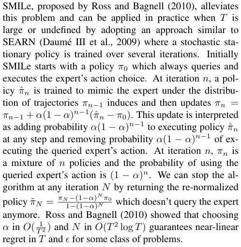
Ross and Bagnell (2010) 提出的 SMILe 缓解了这一问题；通过采用类似于 SEARN（Daumé III et al., 2009）的方法，在多个迭代中训练一个随机平稳策略，SMILe 能够在 T 很大或未定义时应用于实践。最初，SMILe 从一个始终查询并执行专家所选动作的策略 π 0 开始。在迭代 n，训练一个策略 π ˆ n，用于在 πn− 1 所诱导的轨迹分布下模仿专家，随后更新 πn = πn− 1 + α (1 − α )n−1 (ˆ πn − π 0)。这一更新被解释为：在任意步骤执行策略 π ˆ n 的概率增加 α (1 − α )n−1，而执行被查询专家的动作的概率减少 α (1 − α )n−1。在迭代 n，πn 是 n 个策略的混合，使用被查询专家动作的概率为 (1 − α )n。我们可以在任意迭代 N 停止算法，返回不再查询专家的重新归一化策略〔行内公式见原版〕。Ross and Bagnell (2010) 证明，选择 α 属于〔行内公式见原版〕且 N 属于〔行内公式见原版〕能够保证对于某些类别的问题在 T 和 ϵ 上实现近线性遗憾。
3 DATASET AGGREGATION
核对原版排版
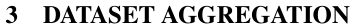
3 数据集聚合
We now present DAGGER (Dataset Aggregation), an iterative algorithm that trains a deterministic policy that achieves good performance guarantees under its induced distribution of states.
核对原版排版
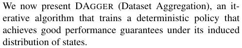
我们现在提出 DAGGER（数据集聚合，Dataset Aggregation），这是一种迭代算法，用于训练一个确定性策略，该策略在其所诱导的状态分布下能获得良好的性能保证。
In its simplest form, the algorithm proceeds as follows. At the first iteration, it uses the expert’s policy to gather a dataset of trajectories D and train a policy π ˆ2 that best mimics the expert on those trajectories. Then at iteration n , it uses π ˆ n to collect more trajectories and adds those trajectories to the dataset D . The next policy π ˆ n +1 is the policy that best mimics the expert on the whole dataset D .
核对原版排版
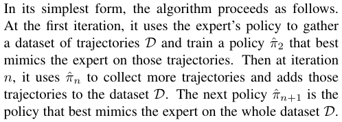
该算法的最简单形式如下。在第 1 次迭代中，它利用专家策略收集一个轨迹数据集 D，并训练一个在这些轨迹上最好地模仿专家的策略 π ˆ2。然后在第 n 次迭代中，它利用 π ˆ n 收集更多轨迹并将这些轨迹添加到数据集 D 中。下一个策略 π ˆ n +1 则是能够在整个数据集 D 上最好地模仿专家的策略。
2This is the case for instance in Markov Desision Processes (MDPs) when the Markov Chain defined by the system dynamics and policy π∗ is rapidly mixing. In particular, if it is α -mixing with exponential decay rate δ then u is O ( 1 − exp(1 −δ )).
核对原版排版
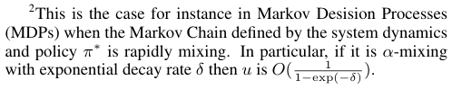
2 例如在马尔可夫决策过程（MDP）中，当由系统动力学和策略 π∗ 定义的马尔可夫链快速混合时就是这种情况。特别是，如果它是具有指数衰减率 δ 的 α-混合，则 u 为 O ( 1 − exp(1 −δ ))。
展开第 3 页原版整页（含全部图表、公式与页眉页脚）
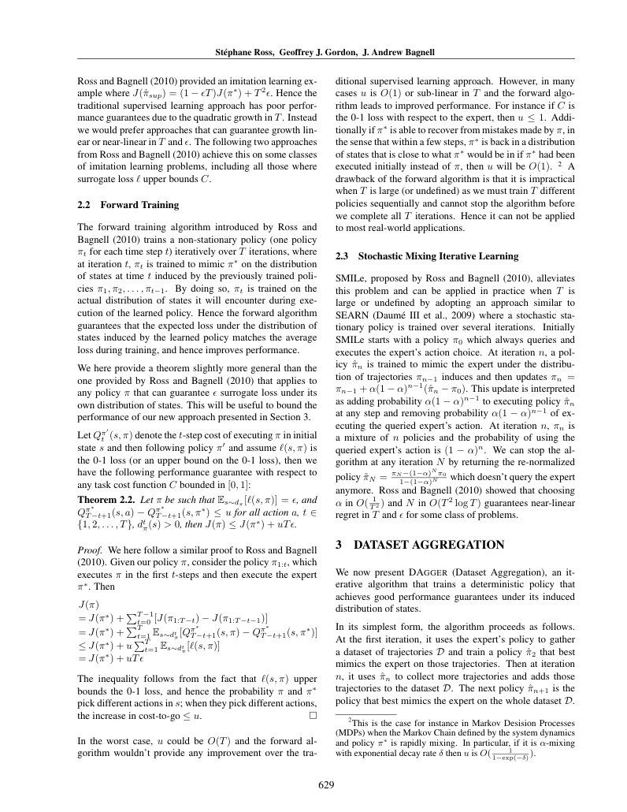
第 4 页Page 4PDF p.4
Initialize D ←∅ . Initialize π ˆ1 to any policy in Π. for i = 1 to N do Let πi = βiπ∗ + (1 − βi )ˆ πi . Sample T -step trajectories using πi . Get dataset Di = { ( s, π∗ ( s )) } of visited states by πi and actions given by expert. Aggregate datasets: D ←D� Di . Train classifier π ˆ i +1 on D . end for Return best π ˆ i on validation. Algorithm 3.1: DAGGER Algorithm.
核对原版排版
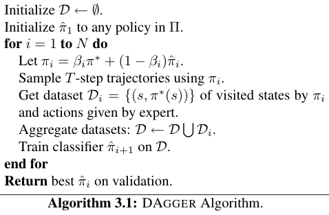
初始化 D ←∅。将 π ˆ1 初始化为 Π 中的任意策略。for i = 1 to N do 令 πi = βiπ∗ + (1 − βi )ˆ πi。使用 πi 采样 T 步轨迹。获取由 πi 访问的状态以及专家给出的动作所组成的数据集 Di = { ( s, π∗ ( s )) }。聚合数据集：〔行内公式见原版〕。在 D 上训练分类器 π ˆ i +1。end for 在验证集上返回最佳的 π ˆ i。算法 3.1：DAGGER 算法。
In other words, DAGGER proceeds by collecting a dataset at each iteration under the current policy and trains the next policy under the aggregate of all collected datasets. The intuition behind this algorithm is that over the iterations, we are building up the set of inputs that the learned policy is likely to encounter during its execution based on previous experience (training iterations). This algorithm can be interpreted as a Follow-The-Leader algorithm in that at iteration n we pick the best policy ˆ πn +1 in hindsight, i.e. under all trajectories seen so far over the iterations.
核对原版排版
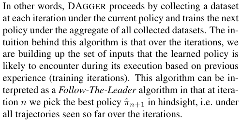
换句话说，DAGGER 的运行方式是在每次迭代中收集当前策略下的数据集，并在所有已收集数据集的聚合集上训练下一个策略。该算法背后的直觉在于，随着迭代的进行，我们正基于以往的经验（训练迭代）构建出所学策略在执行过程中可能遇到的一组输入。该算法可以被解释为一种“跟随领导者”（Follow-The-Leader）算法，因为在第 n 次迭代中，我们事后选择最佳策略 ˆ πn +1，即在迄今为止所有迭代中所见的所有轨迹下表现最优的策略。
To better leverage the presence of the expert in our imitation learning setting, we optionally allow the algorithm to use a modified policy πi = βiπ∗ + (1 − βi )ˆ πi at iteration i that queries the expert to choose controls a fraction of the time while collecting the next dataset. This is often desirable in practice as the first few policies, with relatively few datapoints, may make many more mistakes and visit states that are irrelevant as the policy improves.
核对原版排版
为了在我们的动作模仿设定中更好地利用专家的存在，我们允许算法在迭代 i 中选择性地使用修改后的策略 πi = βiπ∗ + (1 − βi )ˆ πi；该策略在收集下一个数据集时，有一部分时间会查询专家以选择控制量。这在实践中通常是可取的，因为最初的几个策略由于数据点相对较少，可能会犯多得多的错误，并访问那些随着策略改进而变得无关紧要的状态。
We will typically use β 1 = 1 so that we do not have to specify an initial policy ˆ π 1 before getting data from the expert’s behavior. Then we could choose βi = pi−1 to have a probability of using the expert that decays exponentially as in SMILe and SEARN. We show below the only requirement is that {βi} be a sequence such that βN = N1 � Ni =1βi→0 as N →∞ . The simple, parameter-free version of the algorithm described above is the special case βi = I ( i = 1) for I the indicator function, which often performs best in practice (see Section 5). The general DAGGER algorithm is detailed in Algorithm 3.1. The main result of our analysis in the next section is the following guarantee for DAGGER. Let π 1: N denote the sequence of policies π 1 , π 2 , . . . , πN . Assume ℓ is strongly convex and bounded over Π. Suppose βi ≤ (1 − α )i−1 for all i for some constant α independent of T . Let ϵN = min π∈ Π N1 � Ni =1Es∼d πi[ℓ(s, π)]bethe true loss of the best policy in hindsight. Then the following holds in the infinite sample case (infinite number of sample trajectories at each iteration):
核对原版排版
我们通常会使用 β 1 = 1，这样在从专家行为中获取数据之前，就不必指定初始策略 ˆ π 1。然后我们可以像 SMILe 和 SEARN 那样选择 βi = pi−1，使使用专家的概率呈指数衰减。我们在下文证明，唯一的要求是 {βi} 是一个使得当 N →∞ 时 〔行内公式见原版〕 的序列。上述算法的简单无参数版本是 βi = I ( i = 1) 的特例（其中 I 为指示函数），该版本在实践中往往表现最好（见第 5 节）。通用的 DAGGER 算法详见算法 3.1。下一节我们分析的主要结果给出了 DAGGER 的以下保证。令 π 1: N 表示策略序列 π 1 , π 2 , . . . , πN。假设 ℓ 在 Π 上是强凸且有界的。假设对所有 i，βi ≤ (1 − α )i−1 成立，其中常数 α 与 T 无关。令 ϵN = 〔行内公式见原版〕 为事后最佳策略的真实损失。则在无限样本情况下（每次迭代采样无限多条轨迹），以下结论成立：
Theorem 3.1. For DAGGER , if N is O˜ ( T ) there exists a policy π ˆ ∈ π ˆ1: N s.t. E s∼dπ ˆ [ ℓ ( s, ˆ π )] ≤ ϵN + O (1 /T )
核对原版排版
定理 3.1。对于 DAGGER，如果 N 是 O˜ ( T )，则存在策略 π ˆ ∈ π ˆ1: N，使得 E s∼dπ ˆ [ ℓ ( s, ˆ π )] ≤ ϵN + O (1 /T )。
In particular, this holds for the policy π ˆ = arg min π∈π ˆ1: N E s∼dπ [ ℓ ( s, π )]. 3 If the task cost function C corresponds to (or is upper bounded by) the surrogate loss ℓ then this bound tells us directly that J (ˆ π ) ≤ TϵN + O (1). For arbitrary task cost function C , then if ℓ is an upper bound on the 0-1 loss with respect to π∗ , combining this result with Theorem 2.2 yields that:
核对原版排版
特别地，这对于策略 π ˆ = arg min π∈π ˆ1: N E s∼dπ [ ℓ ( s, π )] 成立。3 如果任务代价函数 C 对应于代理损失 ℓ（或由其提供上界），则该界直接表明 J (ˆ π ) ≤ TϵN + O (1)。对于任意任务代价函数 C，如果 ℓ 是关于 π∗ 的 0-1 损失的上界，将该结果与定理 2.2 相结合可得：
Theorem 3.2. For DAGGER , if N is O˜ ( uT ) there exists a policy π ˆ ∈ π ˆ1: N s.t. J (ˆ π ) ≤ J ( π∗ ) + uTϵN + O (1) .
核对原版排版
定理 3.2。对于 DAGGER，如果 N 是 O˜ ( uT )，则存在策略 π ˆ ∈ π ˆ1: N，使得 J (ˆ π ) ≤ J ( π∗ ) + uTϵN + O (1)。
Finite Sample Results In the finite sample case, suppose we sample m trajectories with πi at each iteration i , and denote this dataset Di . Let ϵ ˆ N = min π∈ Π N1 � Ni =1Es∼D i[ℓ(s, π)] be the training loss of the best policy on the sampled trajectories, then using AzumaHoeffding’s inequality leads to the following guarantee:
核对原版排版
有限样本结果 在有限样本情况下，假设在每次迭代 i 中我们使用 πi 采样 m 条轨迹，并将该数据集记为 Di。令 ϵ ˆ N = 〔行内公式见原版〕 为在采样轨迹上最佳策略的训练损失，那么利用 Azuma-Hoeffding 不等式可得出以下保证：
Theorem 3.3. For DAGGER , if N is O ( T2 log(1 /δ )) and m is O (1) then with probability at least 1 − δ there exists a policy π ˆ ∈ π ˆ1: N s.t. E s∼dπ ˆ [ ℓ ( s, ˆ π )] ≤ ϵ ˆ N + O (1 /T )
核对原版排版
定理 3.3。对于 DAGGER，如果 N 是 O ( T2 log(1 /δ )) 且 m 是 O (1)，则以至少 1 − δ 的概率存在策略 π ˆ ∈ π ˆ1: N，使得 E s∼dπ ˆ [ ℓ ( s, ˆ π )] ≤ ϵ ˆ N + O (1 /T )。
A more refined analysis taking advantage of the strong convexity of the loss function (Kakade and Tewari, 2009) may lead to tighter generalization bounds that require N only of order O˜ ( T log(1 /δ )). Similarly:
核对原版排版
利用损失函数的强凸性进行更精细的分析（Kakade and Tewari, 2009）可能会带来更紧的泛化界，仅要求 N 达到 O˜ ( T log(1 /δ )) 阶。类似地：
Theorem 3.4. For DAGGER , if N is O ( u2 T2 log(1 /δ )) and m is O (1) then with probability at least 1 − δ there exists a policy ˆ π ∈ π ˆ1: N s.t. J (ˆ π ) ≤ J ( π∗ )+ uT ϵ ˆ N + O (1) .
核对原版排版
定理 3.4。对于 DAGGER，如果 N 是 O ( u2 T2 log(1 /δ )) 且 m 是 O (1)，则以至少 1 − δ 的概率存在策略 ˆ π ∈ π ˆ1: N，使得 J (ˆ π ) ≤ J ( π∗ )+ uT ϵ ˆ N + O (1)。
4 THEORETICAL ANALYSIS
核对原版排版
4 理论分析
The theoretical analysis of DAGGER only relies on the noregret property of the underlying Follow-The-Leader algorithm on strongly convex losses (Kakade and Tewari, 2009) which picks the sequence of policies π ˆ1: N . Hence the presented results also hold for any other no regret online learning algorithm we would apply to our imitation learning setting. In particular, we can consider the results here a reduction of imitation learning to no-regret online learning where we treat mini-batches of trajectories under a single policy as a single online-learning example. We first briefly review concepts of online learning and no regret that will be used for this analysis.
核对原版排版
DAGGER 的理论分析仅依赖于底层“跟随领导者”（Follow-The-Leader）算法在强凸损失上的无悔（no-regret）性质（Kakade and Tewari, 2009），该算法选取了策略序列 π ˆ1: N。因此，所给出的结果对于我们应用到动作模仿设定中的任何其他无悔在线学习算法同样成立。特别是，我们可以将本文的结果视为将动作模仿归约为无悔在线学习，其中我们将单一策略下的轨迹小批量（mini-batch）视为单个在线学习样本。我们首先简要回顾将用于本分析的在线学习与无悔概念。
4.1 Online Learning
核对原版排版
4.1 在线学习
In online learning, an algorithm must provide a policy πn at iteration n which incurs a loss ℓn ( πn ). After observing this loss, the algorithm can provide a different policy πn +1 for the next iteration which will incur loss ℓn +1( πn +1). The
核对原版排版
在在线学习中，算法必须在第 n 次迭代提供一个产生损失 ℓn ( πn ) 的策略 πn。在观察到该损失后，算法可以为下一次迭代提供一个不同的策略 πn +1，该策略将产生损失 ℓn +1( πn +1)。
3It is not necessary to find the best policy in the sequence that minimizes the loss under its distribution; the same guarantee holds for the policy which uniformly randomly picks one policy in the sequence π ˆ1: N and executes that policy for T steps.
核对原版排版
3 并不一定要在序列中找出在其自身分布下使损失最小的最佳策略；对于从序列 π ˆ1: N 中均匀随机选取一个策略并执行该策略 T 步的策略，同样的保证也成立。
第 5 页Page 5PDF p.5
loss functions ℓn +1 may vary in an unknown or even adversarial fashion over time. A no-regret algorithm is an algorithm that produces a sequence of policies π 1 , π 2 , . . . , πN such that the average regret with respect to the best policy in hindsight goes to 0 as N goes to ∞ :
核对原版排版
损失函数 ℓn +1 可能会随时间以未知甚至对抗的方式发生变化。无悔算法是指能够生成一个策略序列 π 1 , π 2 , . . . , πN 的算法，使得随着 N 趋近于 ∞，相对于事后最佳策略的平均遗憾趋近于 0：
for lim N →∞ γN = 0. Many no-regret algorithms guarantee that γN is O˜ ( N1)(e.g.whenℓisstronglyconvex) (Hazan et al., 2006; Kakade and Shalev-Shwartz, 2008; Kakade and Tewari, 2009).
核对原版排版
其中 lim N →∞ γN = 0。许多无悔算法能够保证 γN 为 O˜ ( N1)（例如当 ℓ 为强凸时）（Hazan et al., 2006; Kakade and Shalev-Shwartz, 2008; Kakade and Tewari, 2009）。
4.2 No Regret Algorithms Guarantees
核对原版排版
4.2 无悔算法保证
Now we show that no-regret algorithms can be used to find a policy which has good performance guarantees under its own distribution of states in our imitation learning setting. To do so, we must choose the loss functions to be the loss under the distribution of states of the current policy chosen by the online algorithm: ℓi ( π ) = E s∼dπi [ ℓ ( s, π )].
核对原版排版
现在我们证明，在我们的动作模仿设定中，无悔算法可用于寻找一个在其自身状态分布下具有良好性能保证的策略。为此，我们必须将损失函数选为在线算法所选当前策略的状态分布下的损失：ℓi ( π ) = E s∼dπi [ ℓ ( s, π )]。
For our analysis of DAGGER, we need to bound the total variation distance between the distribution of states encountered by π ˆ i and πi , which continues to call the expert. The following lemma is useful:
核对原版排版
在对 DAGGER 进行分析时，我们需要对 π ˆ i 与持续调用专家的 πi 所遇到的状态分布之间的全变差距离进行有界估计。以下引理十分有用：
Lemma 4.1. ||dπi − dπ ˆ i|| 1 ≤ 2 Tβi.
核对原版排版
引理 4.1。||dπi − dπ ˆ i|| 1 ≤ 2 Tβi。
Proof. Let d the distribution of states over T steps conditioned on πi picking π∗ at least once over T steps. Since πi always executes ˆ πi over T steps with probability (1 − βi )T we have dπi = (1 − βi )T dπ ˆ i + (1 − (1 − βi )T ) d . Thus
核对原版排版
证明。令 d 为在 T 步内 πi 至少选择一次 π∗ 的条件下的 T 步状态分布。由于 πi 在 T 步内始终执行 ˆ πi 的概率为 (1 − βi )T，因此我们有 dπi = (1 − βi )T dπ ˆ i + (1 − (1 − βi )T ) d。由此
The last inequality follows from the fact that (1 − β )T ≥ 1 − βT for any β ∈ [0 , 1].
核对原版排版
最后一个不等式源于对任意 β ∈ [0 , 1] 均有 (1 − β )T ≥ 1 − βT 这一事实。
This is only better than the trivial bound ||dπi − dπ ˆ i|| 1 ≤ 2 for βi ≤ T 1. Assume βi is non-increasing and define nβ the largest n ≤ N such that βn > T 1. Let ϵN = min π∈ Π N1 � Ni =1Es∼d πi[ℓ(s, π)]thelossofthebestpol- icy in hindsight after N iterations and let ℓ max be an upper bound on the loss, i.e. ℓi ( s, ˆ πi ) ≤ ℓ max for all policies π ˆ i , and state s such that dπ ˆ i ( s ) > 0. We have the following: Theorem 4.1. For DAGGER , there exists a policy π ˆ ∈ π ˆ1: N s.t. E s∼dπ ˆ [ ℓ ( s, ˆ π )] ≤ ϵN + γN +2ℓ Nmax [ nβ + T�N i = nβ +1βi], for γNthe average regret ofπˆ1:N.
核对原版排版
这仅在 βi ≤ T 1 时优于平凡界 ||dπi − dπ ˆ i|| 1 ≤ 2。假设 βi 是单调不增的，并定义 nβ 为满足 βn > T 1 的最大 n ≤ N。令 ϵN = 〔行内公式见原版〕 为 N 次迭代后事后最佳策略的损失，并令 ℓ max 为损失的上界，即对所有策略 π ˆ i 以及满足 dπ ˆ i ( s ) > 0 的状态 s，均有 ℓi ( s, ˆ πi ) ≤ ℓ max。我们有以下结论：定理 4.1。对于 DAGGER，存在策略 π ˆ ∈ π ˆ1: N，使得 E s∼dπ ˆ [ ℓ ( s, ˆ π )] ≤ ϵN + γN + 〔行内公式见原版〕，其中 γN 为 π ˆ1: N 的平均遗憾。
Proof. The last lemma implies E s∼dπi ˆ ( ℓi ( s, ˆ πi )) ≤ E s∼dπi ( ℓi ( s, ˆ πi )) + 2 ℓ max min(1 , Tβi ). Then:
核对原版排版
证明。由上一引理可知 E s∼dπi ˆ ( ℓi ( s, ˆ πi )) ≤ E s∼dπi ( ℓi ( s, ˆ πi )) + 2 ℓ max min(1 , Tβi )。于是：
Under an error reduction assumption that for any input distribution, there is some policy π ∈ Π that achieves surrogate loss of ϵ , this implies we are guaranteed to find a policy π ˆ which achieves ϵ surrogate loss under its own state distribution in the limit, provided βN → 0. For instance, if we choose βi to be of the form (1 − α )i−1 , then N 1[nβ+T�N i = nβ +1βi]≤ Nα 1[logT+ 1]andthisextra penalty becomes negligible for N as O˜ ( T ). As we need at least O˜ ( T ) iterations to make γN negligible, the number of iterations required by DAGGER is similar to that required by any no-regret algorithm. Note that this is not as strong as the general error or regret reductions considered in (Beygelzimer et al., 2005; Ross and Bagnell, 2010; Daumé III et al., 2009) which require only classification: we require a no-regret method or strongly convex surrogate loss function, a stronger (albeit common) assumption.
核对原版排版
在误差归约假设下（即对于任意输入分布，均存在某个策略 π ∈ Π 能实现 ϵ 的代理损失），只要 βN → 0，这就意味着我们保证在极限情况下能找到一个在其自身状态分布下实现 ϵ 代理损失的策略 π ˆ。例如，如果我们选择形如 (1 − α )i−1 的 βi，则 〔行内公式见原版〕，且当 N 为 O˜ ( T ) 时该额外惩罚变得可以忽略。由于我们至少需要 O˜ ( T ) 次迭代才能使 γN 可以忽略，因此 DAGGER 所需的迭代次数与任何无悔算法所需的迭代次数类似。请注意，这不如 (Beygelzimer et al., 2005; Ross and Bagnell, 2010; Daumé III et al., 2009) 中考虑的仅要求分类的一般误差或遗憾归约那么强：我们要求使用无悔方法或强凸代理损失函数，这是一个更强（尽管很常见）的假设。
Finite Sample Case: The previous results hold if the online learning algorithm observes the infinite sample loss, i.e. the loss on the true distribution of trajectories induced by the current policy πi . In practice however the algorithm would only observe its loss on a small sample of trajectories at each iteration. We wish to bound the true loss under its own distribution of the best policy in the sequence as a function of the regret on the finite sample of trajectories.
核对原版排版
有限样本情况：上述结果在在线学习算法观察到无限样本损失（即由当前策略 πi 诱导的轨迹真实分布上的损失）时成立。然而在实践中，算法在每次迭代中只能观察到其在少量轨迹样本上的损失。我们希望将序列中最佳策略在其自身分布下的真实损失，界定为有限样本轨迹上遗憾的函数。
At each iteration i , we assume the algorithm samples m trajectories using πi and then observes the loss ℓi ( π ) = E s∼Di ( ℓ ( s, π )), for Di the dataset of those m trajectories. The online learner guarantees N 1 � Ni =1Es∼D i(ℓ(s, πi))− min π∈ Π N1 � Ni =1Es∼D i(ℓ(s, π)) ≤ γN . Let ϵ ˆ N = min π∈ Π N1 � Ni =1Es∼Di[ℓ(s, π)]thetraininglossofthe best policy in hindsight. Following a similar analysis to Cesa-Bianchi et al. (2004), we obtain: Theorem 4.2. For DAGGER , with probability at least 1 −δ, there exists a policy π ˆ ∈ π ˆ1: N s.t. E s∼dπ ˆ [ ℓ ( s, ˆ π )] ≤ ϵ ˆ N + 2 log(1 /δ ) γN +2ℓ Nmax [ nβ + T�N i = nβ +1βi] +ℓmax ~~�~~ mN , for γN the average regret of π ˆ1: N .
核对原版排版
在每次迭代 i 中，我们假设算法使用 πi 采样 m 条轨迹，然后观察损失 ℓi ( π ) = E s∼Di ( ℓ ( s, π ))，其中 Di 为这 m 条轨迹组成的数据集。在线学习器保证 〔行内公式见原版〕。令 ϵ ˆ N = 〔行内公式见原版〕 为事后最佳策略的训练损失。沿用与 Cesa-Bianchi et al. (2004) 类似的分析，我们可得：定理 4.2。对于 DAGGER，以至少 1 − δ 的概率存在策略 π ˆ ∈ π ˆ1: N，使得 E s∼dπ ˆ [ ℓ ( s, ˆ π )] ≤ 〔行内公式见原版〕，其中 γN 为 π ˆ1: N 的平均遗憾。
Proof. Let Yij be the difference between the expected per step loss of π ˆ i under state distribution dπi and the average per step loss of π ˆ i under the jth sample trajectory with πi at iteration i . The random variables Yij over all i ∈{ 1 , 2 , . . . , N } and j ∈{ 1 , 2 , . . . , m} are all zero mean, bounded in [ −ℓ max , ℓ max] and form a martingale (considering the order Y 11 , Y 12 , . . . , Y 1 m, Y 21 , . . . , YNm ). By Azuma-Hoeffding’s inequality mN 1 � Ni =1 � mj =1Yij≤
核对原版排版
证明。令 Yij 为在迭代 i 中，状态分布 dπi 下 π ˆ i 的期望单步损失与使用 πi 采样的第 j 条样本轨迹下 π ˆ i 的平均单步损失之间的差值。对于所有 i ∈{ 1 , 2 , . . . , N } 和 j ∈{ 1 , 2 , . . . , m}，随机变量 Yij 均具有零均值，且以 [ −ℓ max , ℓ max] 为界，并构成鞅（按顺序 Y 11 , Y 12 , . . . , Y 1 m, Y 21 , . . . , YNm 考虑）。由 Azuma-Hoeffding 不等式，〔行内公式见原版〕
第 6 页Page 6PDF p.6
2 log(1 /δ ) ℓ max ~~�~~ mN with probability at least 1 − δ . Hence, we obtain that with probability at least 1 − δ :
核对原版排版
以至少 1 − δ 的概率满足 〔行内公式见原版〕。因此，我们得出以至少 1 − δ 的概率满足：
We compare performance on a race track called Star Track. As this track floats in space, the kart can fall off the track at any point (the kart is repositioned at the center of the track when this occurs). We measure performance in terms of the average number of falls per lap. For SMILe and DAGGER, we used 1 lap of training per iteration ( ∼ 1000 data points) and run both methods for 20 iterations. For SMILe we choose parameter α = 0 . 1 as in Ross and Bagnell (2010), and for DAGGER the parameter βi = I ( i = 1) for I the indicator function. Figure 2 shows 95% confidence intervals on the average falls per lap of each method after 1, 5, 10, 15 and 20 iterations as a function of the total number of training data collected. We first observe that with the baseline
核对原版排版
我们在一条名为 Star Track 的赛道上对比了性能。由于该赛道漂浮在太空中，卡丁车可能在任何位置掉出赛道（发生这种情况时，卡丁车会被重新放置在赛道中央）。我们以每圈的平均掉落次数来衡量性能。对于 SMILe 和 DAGGER，我们在每次迭代中使用 1 圈的训练数据（∼ 1000 个数据点），并将两种方法均运行 20 次迭代。对于 SMILe，我们按照 Ross and Bagnell (2010) 选择参数 α = 0 . 1；对于 DAGGER，则选择参数 βi = I ( i = 1)（其中 I 为指示函数）。图 2 展示了每种方法在 1、5、10、15 和 20 次迭代后每圈平均掉落次数的 95% 置信区间，作为所收集训练数据总量的函数。我们首先观察到，与基线相比
Super Tux Kart is a 3D racing game similar to the popular Mario Kart. Our goal is to train the computer to steer the kart moving at fixed speed on a particular race track, based on the current game image features as input (see Figure 1). A human expert is used to provide demonstrations of the correct steering (analog joystick value in [-1,1]) for each of the observed game images. For all methods, we use a linear
核对原版排版
Super Tux Kart 是一款类似于风靡的 Mario Kart 的 3D 赛车游戏。我们的目标是基于输入的当前游戏图像特征（见图 1），训练计算机在特定赛道上控制以固定速度行驶的卡丁车的转向。我们利用人类专家为每个观察到的游戏图像提供正确转向的示范（取值在 [-1,1] 内的模拟摇杆值）。对于所有方法，我们都使用线性
Figure 1: Image from Super Tux Kart’s Star Track.
核对原版排版
图 1：来自 Super Tux Kart 的 Star Track 赛道的图像。
controller as the base learner which updates the steering at 5Hz based on the vector of image features4 .
核对原版排版
控制器作为基学习器，该控制器基于图像特征向量以 5Hz 的频率更新转向4。
4Features x : LAB color values of each pixel in a 25x19 resized image of the 800x600 image; output steering: y ˆ = wT x + b where w , b minimizes ridge regression objective: L ( w, b ) = n 1 P ni =1(wT xi+b −yi)2 +λ 2wT w, for regularizerλ= 10−3.
核对原版排版
4 特征 x：800x600 图像缩放至 25x19 图像后每个像素的 LAB 颜色值；输出转向：y ˆ = wT x + b，其中 w , b 最小化岭回归目标：L ( w, b ) = n 1 P ni =1(wT xi+b −yi)2 +λ 2wT w，正则化系数 λ= 10−3。
Figure 2: Average falls/lap as a function of training data.
核对原版排版
图2：每圈平均冲出赛道次数与训练数据量的关系。
supervised approach where training always occurs under the expert’s trajectories that performance does not improve as more data is collected. This is because most of the training laps are all very similar and do not help the learner to learn how to recover from mistakes it makes. With SMILe we obtain some improvements but the policy after 20 iterations still falls off the track about twice per lap on average. This is in part due to the stochasticity of the policy which sometimes makes bad choices of actions. For DAGGER, we were able to obtain a policy that never falls off the track after 15 iterations of training. Though even after 5 iterations, the policy we obtain almost never falls off the track and is significantly outperforming both SMILe and the baseline supervised approach. Furthermore, the policy obtained by DAGGER is smoother and looks qualitatively better than the policy obtained with SMILe. A video available on YouTube (Ross, 2010a) shows a qualitative comparison of the behavior obtained with each method.
核对原版排版
在训练始终在专家轨迹下进行的监督方法中，随着收集到更多数据，性能并未得到提升。这是因为大多数训练圈的数据都非常相似，无法帮助学习器学会如何从自身所犯的错误中恢复。使用SMILe我们获得了一定改进，但经过20次迭代后的策略平均每圈仍有约两次冲出赛道。这在一定程度上是由于策略的随机性所致，该随机性有时会做出糟糕的动作选择。对于DAGGER，在经过15次训练迭代后，我们便能够获得一个从未冲出赛道的策略。即便仅经过5次迭代，我们获得的策略也几乎从未冲出赛道，且性能显著优于SMILe和基线监督方法。此外，DAGGER获得的策略更加平滑，在表现上明显优于SMILe获得的策略。YouTube上提供的一段视频（Ross, 2010a）展示了各方法所获行为的定性比较。
5.2 Super Mario Bros.
核对原版排版
5.2 Super Mario Bros.
Super Mario Bros. is a platform video game where the character, Mario, must move across each stage by avoid-
核对原版排版
《超级马里奥兄弟》（Super Mario Bros.）是一款平台类电子游戏，其中的角色马里奥必须在时间耗尽前穿越各个关卡，并通过躲避——
第 7 页Page 7PDF p.7
ing being hit by enemies and falling into gaps, and before running out of time. We used the simulator from a recent Mario Bros. AI competition (Togelius and Karakovskiy, 2009) which can randomly generate stages of varying difficulty (more difficult gaps and types of enemies). Our goal is to train the computer to play this game based on the current game image features as input (see Figure 3). Our expert in this scenario is a near-optimal planning algorithm that has full access to the game’s internal state and can simulate exactly the consequence of future actions. An action consists of 4 binary variables indicating which subset of buttons we should press in { left,right,jump,speed } . For
核对原版排版
——免遭敌人攻击并避免掉入深坑陷阱。我们使用了近期一项马里奥AI竞赛（Togelius and Karakovskiy, 2009）中的仿真器，该仿真器能够随机生成不同难度（更具挑战性的深坑和更多种类的敌人）的关卡。我们的目标是以当前游戏图像特征作为输入，训练计算机来玩这款游戏（见图3）。在此场景中，我们的专家是一个近似最优的规划算法，该算法能够完全访问游戏的内部状态，并能精确模拟未来动作所产生的后果。一个动作由4个二进制变量组成，表示我们应该在 { left, right, jump, speed } 中按下哪些按键子集。对于
Figure 3: Captured image from Super Mario Bros.
核对原版排版
图3：来自《超级马里奥兄弟》（Super Mario Bros.）的截取图像。
all methods, we use 4 independent linear SVM as the base learner which update the 4 binary actions at 5Hz based on the vector of image features5 .
核对原版排版
所有方法，我们均使用4个独立的线性SVM作为基学习器，它们基于图像特征向量以5Hz的频率更新这4个二进制动作5。
We compare performance in terms of the average distance travelled by Mario per stage before dying, running out of time or completing the stage, on randomly generated stages of difficulty 1 with a time limit of 60 seconds to complete the stage. The total distance of each stage varies but is around 4200-4300 on average, so performance can vary roughly in [0,4300]. Stages of difficulty 1 are fairly easy for an average human player but contain most types of enemies and gaps, except with fewer enemies and gaps than stages of harder difficulties. We compare performance of DAgger, SMILe and SEARN6 to the supervised approach (Sup). With each approach we collect 5000 data points per iteration (each stage is about 150 data points if run to completion) and run the methods for 20 iterations. For SMILe we choose parameter α = 0 . 1 (Sm0.1) as in Ross and Bag-
核对原版排版
我们在随机生成、难度为1且通关限时为60秒的关卡上，根据马里奥在死亡、耗尽时间或通关之前每关平均行进的距离来评估性能。每个关卡的总距离有所不同，但平均约为4200–4300，因此性能大致在 [0, 4300] 范围内变化。难度为1的关卡对普通人类玩家来说相当简单，但包含了绝大多数类型的敌人和深坑，只是敌人和深坑的数量少于更高难度的关卡。我们将 DAgger、SMILe 和 SEARN6 与监督方法（Sup）的性能进行了比较。对于每种方法，我们在每次迭代中收集5000个数据点（如果完整通关，每个关卡大约产生150个数据点），并使各方法运行20次迭代。对于SMILe，我们按照 Ross and Bagnell (2010) 中的设定选择参数 α = 0.1 (Sm0.1)——
5For the input features x : each image is discretized in a grid of 22x22 cells centered around Mario; 14 binary features describe each cell (types of ground, enemies, blocks and other special items); a history of those features over the last 4 images is used, in addition to other features describing the last 6 actions and the state of Mario (small,big,fire,touches ground), for a total of 27152 binary features (very sparse). The kth output binary variable y ˆ k = I ( wkTx+bk>0),wherewk, bkoptimizesthe SVM objective with regularizer λ = 10−4 using stochastic gradient descent (Ratliff et al., 2007; Bottou, 2009).
核对原版排版
5对于输入特征 x：每幅图像被离散化为以马里奥为中心的 22×22 网格单元；每个单元由 14 个二进制特征进行描述（地面、敌人、砖块及其他特殊物品的类型）；除了描述最近 6 次动作以及马里奥状态（变小、变大、火球、接触地面）的其他特征外，还使用了过去 4 幅图像中这些特征的历史记录，总共包含 27152 个二进制特征（非常稀疏）。第 k 个输出二进制变量 y ˆ k = I ( wkTx+bk>0)，其中 wk, bk 使用随机梯度下降法（Ratliff et al., 2007; Bottou, 2009）结合正则化参数 λ = 10−4 来优化 SVM 目标函数。
6We use the same cost-to-go approximation in Daumé III et al. (2009); in this case SMILe and SEARN differs only in how the weights in the mixture are updated at each iteration.
核对原版排版
6我们采用了与 Daumé III et al. (2009) 中相同的 cost-to-go 近似；在这种情况下，SMILe 和 SEARN 的区别仅在于每次迭代时如何更新混合策略中的权重。
nell (2010). For DAGGER we obtain results with different choice of the parameter βi : 1) βi = I ( i = 1) for I the indicator function (D0); 2) βi = pi−1 for all values of p ∈{ 0 . 1 , 0 . 2 , . . . , 0 . 9 } . We report the best results obtained with p = 0 . 5 (D0.5). We also report the results with p = 0 . 9 (D0.9) which shows the slower convergence of using the expert more frequently at later iterations. Similarly for SEARN, we obtain results with all choice of α in { 0 . 1 , 0 . 2 , . . . , 1 } . We report the best results obtained with α = 0 . 4 (Se0.4). We also report results with α = 1 . 0 (Se1), which shows the unstability of such a pure policy iteration approach. Figure 4 shows 95% confidence intervals on the average distance travelled per stage at each iteration as a function of the total number of training data collected. Again here we observe that with the supervised
核对原版排版
nell (2010)。对于 DAGGER，我们针对参数 βi 的不同选取方式获得了结果：1) βi = I(i = 1)，其中 I 为指示函数（D0）；2) 对于所有的 p ∈ { 0.1, 0.2, ..., 0.9 }，取 βi = pi−1。我们报告了在 p = 0.5 时取得的最佳结果（D0.5）。我们还报告了 p = 0.9 的结果（D0.9），该结果表明在后续迭代中更频繁地使用专家会导致更慢的收敛。类似地，对于 SEARN，我们获得了在 { 0.1, 0.2, ..., 1 } 中所有 α 选择下的结果。我们报告了 α = 0.4 时获得的最优结果（Se0.4）。我们还报告了 α = 1.0 的结果（Se1），这展示了此类纯策略迭代方法的不稳定性。图4展示了每次迭代中每关平均行进距离的 95% 置信区间随收集到的训练数据总量变化的关系。在这里我们再次观察到，对于监督——
Figure 4: Average distance/stage as a function of data.
核对原版排版
图4：每关平均行进距离与数据量的关系。
approach, performance stagnates as we collect more data from the expert demonstrations, as this does not help the particular errors the learned controller makes. In particular, a reason the supervised approach gets such a low score is that under the learned controller, Mario is often stuck at some location against an obstacle instead of jumping over it. Since the expert always jumps over obstacles at a significant distance away, the controller did not learn how to get unstuck in situations where it is right next to an obstacle. On the other hand, all the other iterative methods perform much better as they eventually learn to get unstuck in those situations by encountering them at the later iterations. Again in this experiment, DAGGER outperforms SMILe, and also outperforms SEARN for all choice of α we considered. When using βi = 0 . 9i−1 , convergence is significantly slower could have benefited from more iterations as performance was still improving at the end of the 20 iterations. Choosing 0 . 5i−1 yields slightly better performance (3030) then with the indicator function (2980). This is potentially due to the large number of data generated where mario is stuck at the same location in the early iterations when using the indicator; whereas using the ex-
核对原版排版
——方法，随着我们从专家演示中收集更多数据，性能却停滞不前，因为这无助于解决学习到的控制器所犯的特定错误。具体而言，监督方法得分如此之低的一个原因在于，在学习到的控制器控制下，马里奥经常在某处被障碍物卡住，而不是跃过障碍物。由于专家总是在距离障碍物较远的地方起跳越过，因此控制器没有学会紧贴着障碍物时如何摆脱卡阻。另一方面，所有其他迭代方法的表现都要好得多，因为它们在后续迭代中遇到了这些情况，最终学会了在这些局面下摆脱卡阻。在该实验中，DAGGER 再次优于 SMILe，并且在我们考虑的所有 α 取值下均优于 SEARN。当使用 βi = 0.9i−1 时，收敛速度显著变慢，由于在20次迭代结束时性能仍在提升，因而该设置可能受益于更多的迭代次数。选择 0.5i−1 取得的性能（3030）略优于使用指示函数（2980）。这可能是由于在使用指示函数时，早期迭代中生成了大量马里奥卡在同一位置的数据；而使用专——
第 8 页Page 8PDF p.8
pert a small fraction of the time still allows to observe those locations but also unstucks mario and makes it collect a wider variety of useful data. A video available on YouTube (Ross, 2010b) also shows a qualitative comparison of the behavior obtained with each method.
核对原版排版
——家一小部分时间不仅仍能观察到这些位置，还能帮助马里奥摆脱卡阻，从而使其收集到更多样化的有用数据。YouTube 上提供的一段视频（Ross, 2010b）同样展示了各方法所获行为的定性比较。
5.3 Handwriting Recognition
核对原版排版
5.3 手写识别
Finally, we demonstrate the efficacy of our approach on a structured prediction problem involving recognizing handwritten words given the sequence of images of each character in the word. We follow Daumé III et al. (2009) in adopting a view of structured prediction as a degenerate form of imitation learning where the system dynamics are deterministic and trivial in simply passing on earlier predictions made as inputs for future predictions. We use the dataset of Taskar et al. (2003) which has been used extensively in the literature to compare several structured prediction approaches. This dataset contains roughly 6600 words (for a total of over 52000 characters) partitioned in 10 folds. We consider the large dataset experiment which consists of training on 9 folds and testing on 1 fold and repeating this over all folds. Performance is measured in terms of the character accuracy on the test folds.
核对原版排版
最后，我们在一个结构化预测问题上展示了本方法的有效性，该问题涉及在给定单词中各字符图像序列的情况下识别手写单词。我们遵循 Daumé III et al. (2009) 的做法，将结构化预测视为模仿学习的一种退化形式，其中系统动力学是确定性的，且仅仅是将先前做出的预测传递为未来预测的输入，因而极为简单。我们使用了 Taskar et al. (2003) 的数据集，该数据集在文献中被广泛用于比较多种结构化预测方法。该数据集包含大约 6600 个单词（共计超过 52000 个字符），划分为 10 折。我们考虑大数据集实验，即在 9 折上训练、在 1 折上测试，并在所有折上重复此过程。性能通过测试折上的字符准确率来衡量。
We consider predicting the word by predicting each character in sequence in a left to right order, using the previously predicted character to help predict the next and a linear SVM7 , following the greedy SEARN approach in Daumé III et al. (2009). Here we compare our method to SMILe, as well as SEARN (using the same approximations used in Daumé III et al. (2009)). We also compare these approaches to two baseline, a non-structured approach which simply predicts each character independently and the supervised training approach where training is conducted with the previous character always correctly labeled. Again we try all choice of α ∈{ 0 . 1 , 0 . 2 , . . . , 1 } for SEARN, and report results for α = 0 . 1, α = 1 (pure policy iteration) and the best α = 0 . 8, and run all approaches for 20 iterations. Figure 5 shows the performance of each approach on the test folds after each iteration as a function of training data. The baseline result without structure achieves 82% character accuracy by just using an SVM that predicts each character independently. When adding the previous character feature, but training with always the previous character correctly labeled (supervised approach), performance increases up to 83.6%. Using DAgger increases performance further to 85.5%. Surprisingly, we observe SEARN with α = 1, which is a pure policy iteration approach performs very well on this experiment, similarly to the best α = 0 . 8 and DAgger. Because there is only a small part of the input that is influenced by the current policy (the previous
核对原版排版
我们遵循 Daumé III et al. (2009) 中的贪心 SEARN 方法，考虑按从左到右的顺序逐个预测字符来预测单词，利用先前预测的字符和一个线性 SVM7 来辅助预测下一个字符。在此，我们将我们的方法与 SMILe 以及 SEARN（采用 Daumé III et al. (2009) 中相同的近似方法）进行比较。我们还将这些方法与两个基线进行了对比：一个是非结构化方法，它仅独立地预测每个字符；另一个是监督训练方法，其训练过程中前一个字符始终带有正确的真实标签。同样，我们尝试了 SEARN 中 α ∈ { 0.1, 0.2, ..., 1 } 的所有选择，并报告了 α = 0.1、α = 1（纯策略迭代）以及最佳的 α = 0.8 的结果，所有方法均运行 20 次迭代。图5展示了每次迭代后各方法在测试折上的性能与训练数据量的关系。无结构的基线结果仅使用独立预测每个字符的 SVM 就达到了 82% 的字符准确率。当加入前一个字符的特征、但在训练时前一个字符始终标注正确标签（监督方法）时，性能提升至 83.6%。使用 DAgger 则将性能进一步提升至 85.5%。令人惊讶的是，我们观察到采用 α = 1（即纯策略迭代方法）的 SEARN 在该实验中表现非常好，与最优的 α = 0.8 以及 DAgger 相当。因为输入中只有一小部分受到当前策略的影响（即先前的——
7Each character is 8x16 binary pixels (128 input features); 26 binary features are used to encode the previously predicted letter in the word. We train the multiclass SVM using the all-pairs reduction to binary classification (Beygelzimer et al., 2005).
核对原版排版
7每个字符为 8×16 二进制像素（128 个输入特征）；26 个二进制特征用于对单词中先前预测的字母进行编码。我们使用归约为二分类的所有对（all-pairs）归约方法（Beygelzimer et al., 2005）来训练多类 SVM。
Figure 5: Character accuracy as a function of iteration.
核对原版排版
图5：字符准确率与迭代次数的关系。
predicted character feature) this makes this approach not as unstable as in general reinforcement/imitation learning problems (as we saw in the previous experiment). SEARN and SMILe with small α = 0 . 1 performs similarly but significantly worse than DAgger. Note that we chose the simplest (greedy, one-pass) decoding to illustrate the benefits of the DAGGER approach with respect to existing reductions. Similar techniques can be applied to multi-pass or beam-search decoding leading to results that are competitive with the state-of-the-art.
核对原版排版
——预测字符特征），这使得该方法不像一般强化学习/动作模仿问题中那样不稳定（正如我们在前一个实验中所见）。取较小参数 α = 0.1 的 SEARN 和 SMILe 表现相近，但显著逊于 DAgger。需要注意的是，我们选择最简单的（贪心、单遍）解码方式，是为了说明 DAGGER 方法相对于现有归约方法的优势。类似的技术亦可应用于多遍解码或束搜索（beam-search）解码，从而取得与当前最先进方法相媲美的结果。
6 FUTURE WORK
核对原版排版
6 未来工作
We show that by batching over iterations of interaction with a system, no-regret methods, including the presented DAGGER approach can provide a learning reduction with strong performance guarantees in both imitation learning and structured prediction. In future work, we will consider more sophisticated strategies than simple greedy forward decoding for structured prediction, as well as using base classifiers that rely on Inverse Optimal Control (Abbeel and Ng, 2004; Ratliff et al., 2006) techniques to learn a cost function for a planner to aid prediction in imitation learning. Further we believe techniques similar to those presented, by leveraging a cost-to-go estimate, may provide an understanding of the success of online methods for reinforcement learning and suggest a similar data-aggregation method that can guarantee performance in such settings.
核对原版排版
我们证明，通过对与系统交互的各次迭代进行批处理，包括本文提出的 DAGGER 方法在内的无悔（no-regret）方法能够在模仿学习和结构化预测中提供具有强大性能保证的学习归约。在未来的工作中，我们将考虑在结构化预测中采用比简单贪心前向解码更复杂的策略，并使用基于逆最优控制（Inverse Optimal Control, Abbeel and Ng, 2004; Ratliff et al., 2006）技术的基分类器来为规划器学习代价函数，以辅助模仿学习中的预测。此外，我们认为类似于本文提出的技术，通过利用 cost-to-go 估计，可能有助于理解在线强化学习方法的成功机理，并启发类似的数据聚合（data-aggregation）方法以在此类场景下提供性能保证。
Acknowledgements
核对原版排版
致谢
This work is supported by the ONR MURI grant N0001409-1-1052, Reasoning in Reduced Information Spaces, and by the National Sciences and Engineering Research Council of Canada (NSERC).
核对原版排版
本项工作得到了 ONR MURI 资助项目 N0001409-1-1052“简化信息空间中的推理”（Reasoning in Reduced Information Spaces）以及加拿大自然科学与工程研究委员会（NSERC）的支持。
第 9 页Page 9PDF p.9
References
核对原版排版
References
- P. Abbeel and A. Y. Ng. Apprenticeship learning via inverse reinforcement learning. In Proceedings of the 21st International Conference on Machine Learning (ICML) , 2004.
核对原版排版
- P. Abbeel and A. Y. Ng. Apprenticeship learning via inverse reinforcement learning. In Proceedings of the 21st International Conference on Machine Learning (ICML) , 2004.
- B. D. Argall, S. Chernova, M. Veloso, and B. Browning. A survey of robot learning from demonstration. Robotics and Autonomous Systems , 2009.
核对原版排版
- B. D. Argall, S. Chernova, M. Veloso, and B. Browning. A survey of robot learning from demonstration. Robotics and Autonomous Systems , 2009.
- A. Beygelzimer, V. Dani, T. Hayes, J. Langford, and B. Zadrozny. Error limiting reductions between classification tasks. In Proceedings of the 22nd International Conference on Machine Learning (ICML) , 2005.
核对原版排版
- A. Beygelzimer, V. Dani, T. Hayes, J. Langford, and B. Zadrozny. Error limiting reductions between classification tasks. In Proceedings of the 22nd International Conference on Machine Learning (ICML) , 2005.
- L. Bottou. sgd code, 2009. URL http://www.leon. bottou.org/projects/sgd.
核对原版排版
- L. Bottou. sgd code, 2009. URL http://www.leon. bottou.org/projects/sgd.
- N. Cesa-Bianchi, A. Conconi, and C. Gentile. On the generalization ability of on-line learning algorithms. 2004.
核对原版排版
- N. Cesa-Bianchi, A. Conconi, and C. Gentile. On the generalization ability of on-line learning algorithms. 2004.
- S. Chernova and M. Veloso. Interactive policy learning through confidence-based autonomy. 2009.
核对原版排版
- S. Chernova and M. Veloso. Interactive policy learning through confidence-based autonomy. 2009.
- H. Daumé III, J. Langford, and D. Marcu. Search-based structured prediction. Machine Learning , 2009.
核对原版排版
- H. Daumé III, J. Langford, and D. Marcu. Search-based structured prediction. Machine Learning , 2009.
- E. Hazan, A. Kalai, S. Kale, and A. Agarwal. Logarithmic regret algorithms for online convex optimization. In Proceedings of the 19th annual conference on Computational Learning Theory (COLT) , 2006.
核对原版排版
- E. Hazan, A. Kalai, S. Kale, and A. Agarwal. Logarithmic regret algorithms for online convex optimization. In Proceedings of the 19th annual conference on Computational Learning Theory (COLT) , 2006.
- M. Kääriäinen. Lower bounds for reductions, 2006. Atomic Learning workshop.
核对原版排版
- M. Kääriäinen. Lower bounds for reductions, 2006. Atomic Learning workshop.
- S. Kakade and J. Langford. Approximately optimal approximate reinforcement learning. In Proceedings of the 19th International Conference on Machine Learning (ICML) , 2002.
核对原版排版
- S. Kakade and J. Langford. Approximately optimal approximate reinforcement learning. In Proceedings of the 19th International Conference on Machine Learning (ICML) , 2002.
- S. Kakade and S. Shalev-Shwartz. Mind the duality gap: Logarithmic regret algorithms for online optimization. In Advances in Neural Information Processing Systems (NIPS) , 2008.
核对原版排版
- S. Kakade and S. Shalev-Shwartz. Mind the duality gap: Logarithmic regret algorithms for online optimization. In Advances in Neural Information Processing Systems (NIPS) , 2008.
- S. Kakade and A. Tewari. On the generalization ability of online strongly convex programming algorithms. In Advances in Neural Information Processing Systems (NIPS) , 2009.
核对原版排版
- S. Kakade and A. Tewari. On the generalization ability of online strongly convex programming algorithms. In Advances in Neural Information Processing Systems (NIPS) , 2009.
- N. Ratliff, D. Bradley, J. A. Bagnell, and J. Chestnutt. Boosting structured prediction for imitation learning. In Advances in Neural Information Processing Systems (NIPS) , 2006.
核对原版排版
- N. Ratliff, D. Bradley, J. A. Bagnell, and J. Chestnutt. Boosting structured prediction for imitation learning. In Advances in Neural Information Processing Systems (NIPS) , 2006.
- N. Ratliff, J. A. Bagnell, and M. Zinkevich. (Online) subgradient methods for structured prediction. In Proceedings of the International Conference on Artificial Intelligence and Statistics (AISTATS) , 2007.
核对原版排版
- N. Ratliff, J. A. Bagnell, and M. Zinkevich. (Online) subgradient methods for structured prediction. In Proceedings of the International Conference on Artificial Intelligence and Statistics (AISTATS) , 2007.
- S. Ross. Comparison of imitation learning approaches on Super Tux Kart, 2010a. URL http://www. youtube.com/watch?v=V00npNnWzSU.
核对原版排版
- S. Ross. Comparison of imitation learning approaches on Super Tux Kart, 2010a. URL http://www. youtube.com/watch?v=V00npNnWzSU.
- S. Ross. Comparison of imitation learning approaches on Super Mario Bros, 2010b. URL http://www. youtube.com/watch?v=anOI0xZ3kGM.
核对原版排版
- S. Ross. Comparison of imitation learning approaches on Super Mario Bros, 2010b. URL http://www. youtube.com/watch?v=anOI0xZ3kGM.
- S. Ross and J. A. Bagnell. Efficient reductions for imitation learning. In Proceedings of the 13th International Conference on Artificial Intelligence and Statistics (AISTATS) , 2010.
核对原版排版
- S. Ross and J. A. Bagnell. Efficient reductions for imitation learning. In Proceedings of the 13th International Conference on Artificial Intelligence and Statistics (AISTATS) , 2010.
- S. Schaal. Is imitation learning the route to humanoid robots? In Trends in Cognitive Sciences , 1999.
核对原版排版
- S. Schaal. Is imitation learning the route to humanoid robots? In Trends in Cognitive Sciences , 1999.
- D. Silver, J. A. Bagnell, and A. Stentz. High performance outdoor navigation from overhead data using imitation learning. In Proceedings of Robotics Science and Systems (RSS) , 2008.
核对原版排版
- D. Silver, J. A. Bagnell, and A. Stentz. High performance outdoor navigation from overhead data using imitation learning. In Proceedings of Robotics Science and Systems (RSS) , 2008.
- B. Taskar, C. Guestrin, and D. Koller. Max margin markov networks. In Advances in Neural Information Processing Systems (NIPS) , 2003.
核对原版排版
- B. Taskar, C. Guestrin, and D. Koller. Max margin markov networks. In Advances in Neural Information Processing Systems (NIPS) , 2003.
- J. Togelius and S. Karakovskiy. Mario AI Competition, 2009. URL http://julian.togelius.com/ mariocompetition2009.
核对原版排版
- J. Togelius and S. Karakovskiy. Mario AI Competition, 2009. URL http://julian.togelius.com/ mariocompetition2009.